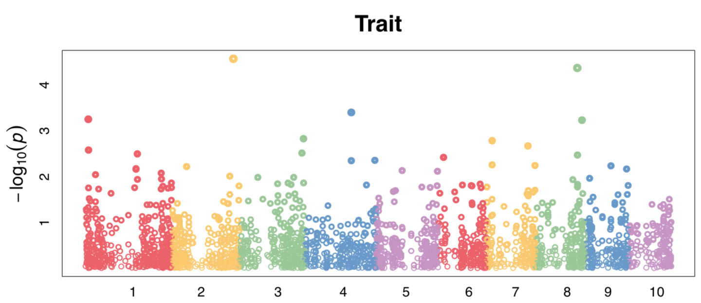
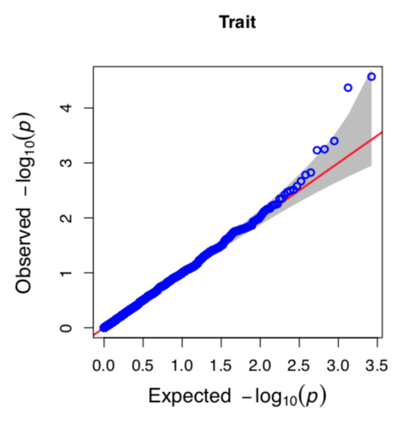
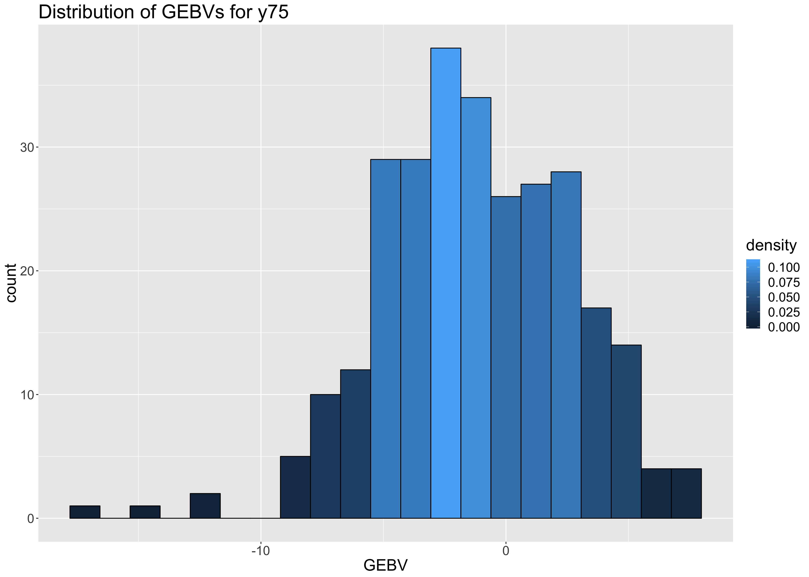
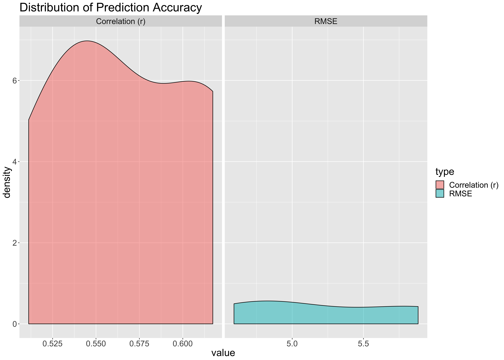
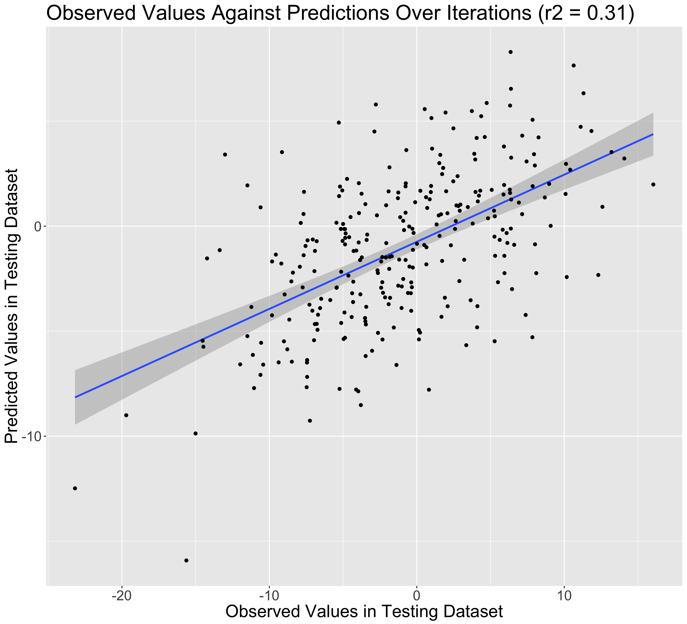
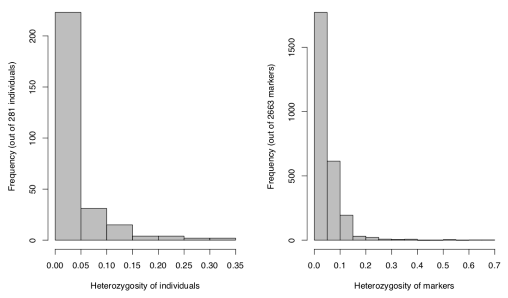
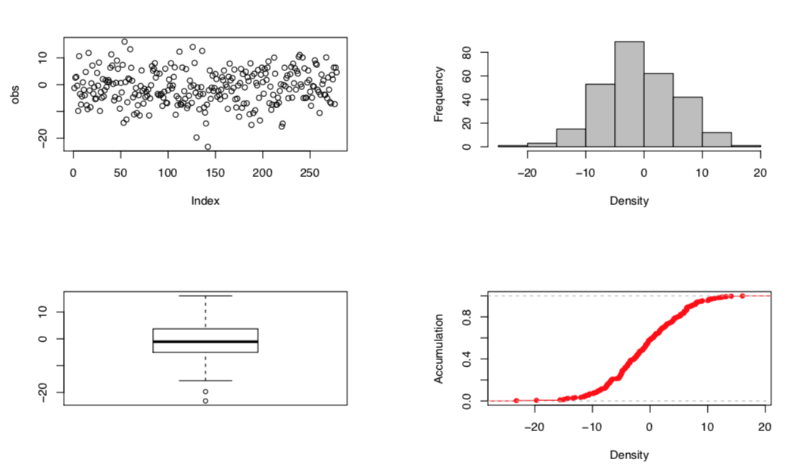

3.2 Output formats
3.2.1 Figures
Manhattan plot

Fig. Manhattan plot by GWAS
Scatter plot: Q-Q plot

Fig. Q-Q plot by GWAS
Histogram: GEBV distribution

Fig. Distribution for GEBVs
Density function: Accuracies for GS validations

Fig. Distribution for prediction accuracies
Scatter plot: GS predictions against observations

Fig. Distribution for prediction accuracies
Histogram: Heterozygosity distribution

Fig. Histograms for overview of heterozygosity
Phenotype overview

Fig. Figure for overview of phenotypes
3.2.2 Tabular results
GWAS report
| SNP | Chromosome | Position | P.value | maf | effect |
|---|---|---|---|---|---|
| PZB00859.1 | 1 | 157104 | 0.8796673 | 0.2402135 | 0.0513818 |
| PZA01271.1 | 1 | 1947984 | 0.0450554 | 0.4893238 | 0.5985480 |
| PZA03613.2 | 1 | 2914066 | 0.0152657 | 0.2900356 | 0.7550551 |
| PZA03613.1 | 1 | 2914171 | 0.7736487 | 0.2508897 | -0.1049524 |
| PZA03614.2 | 1 | 2915078 | 0.1072168 | 0.4697509 | -0.4744598 |
GS: GEBV
| taxa | GEBV |
|---|---|
| ID_1 | -1.77193474724802 |
| ID_2 | 1.72387204220987 |
| ID_3 | 1.68334659084122 |
| ID_4 | -2.41038775121833 |
| ID_5 | -5.74618607007748 |
| … | … |
GS: Marker effects
| V1 | u |
|---|---|
| M_1 | -0.00567222219641276 |
| M_2 | 0.0212495891997373 |
| M_3 | 0.030552733100474 |
| M_4 | -0.0212824623926987 |
| M_5 | -0.0126398188395629 |
| … | … |
GS: Validation results
| r | rmse | trait | iter | fold |
|---|---|---|---|---|
| 0.6141 | 5.8551 | y75 | 1 | 1 |
| 0.5466 | 5.0126 | y75 | 1 | 2 |
| 0.6173 | 4.7957 | y75 | 1 | 3 |
| 0.5112 | 5.8834 | y75 | 1 | 4 |
| 0.5525 | 4.5914 | y75 | 1 | 5 |
GS: Predicted values
| obs | pre | trait | iter | fold |
|---|---|---|---|---|
| -1.2619 | -2.8336 | y75 | 1 | 1 |
| 2.5937 | -0.1296 | y75 | 1 | 2 |
| -7.4122 | -0.6723 | y75 | 1 | 3 |
| -4.3864 | -3.1929 | y75 | 1 | 4 |
| -3.9676 | -7.8634 | y75 | 1 | 5 |
| -8.4040 | -2.2128 | y75 | 2 | 1 |
| -4.4187 | -4.3261 | y75 | 2 | 2 |
| 16.0423 | 1.9852 | y75 | 2 | 3 |